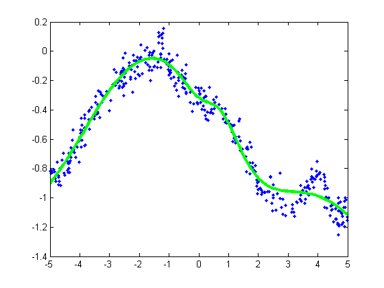

MLP Regression Demo
Based on Mark Schmidt's Demo from http://people.cs.ubc.ca/~schmidtm/Software/minFunc/minFunc.html#8
% This file is from pmtk3.googlecode.com setSeed(0); nVars = 1; nInstances = 400; options.Display = 'iter'; options.MaxIter = 50; [X,y] = makeData('regressionNonlinear',nInstances,nVars); lambda = 0; model = mlpRegressFitSchmidt(X, y, [10], lambda, options); figure; Xtest = [-5:.05:5]'; [yhat, v] = mlpRegressPredictSchmidt(model, Xtest); plot(X,y,'.'); hold on h=plot(Xtest,yhat,'g-'); set(h,'LineWidth',3); %{ figure; plot(X,y,'.'); hold on h=plot(Xtest,yhat,'g-'); set(h,'LineWidth',3); N = length(Xtest); ndx = 1:5:N; h=errorbar(Xtest(ndx), yhat(ndx), 2*sqrt(v(ndx))); set(h, 'color', 'g'); legend({'Data','Neural Net'}); %}
Iteration FunEvals Step Length Function Val Opt Cond
1 2 1.78480e-05 4.39039e+03 4.43823e+03
2 3 1.00000e+00 2.28263e+03 2.42515e+03
3 4 1.00000e+00 5.79937e+02 7.76114e+02
4 5 1.00000e+00 1.15458e+02 3.35375e+02
5 6 1.00000e+00 6.09089e+01 7.56266e+02
6 7 1.00000e+00 4.53584e+01 1.89011e+02
7 8 1.00000e+00 4.04989e+01 8.31303e+01
8 9 1.00000e+00 3.33375e+01 2.14386e+02
9 10 1.00000e+00 2.86998e+01 1.82866e+02
10 11 1.00000e+00 2.40708e+01 9.33957e+01
11 12 1.00000e+00 1.71307e+01 5.50922e+01
12 13 1.00000e+00 1.41590e+01 3.90658e+01
13 14 1.00000e+00 1.03528e+01 2.83964e+01
14 15 1.00000e+00 8.10118e+00 2.01386e+01
15 16 1.00000e+00 6.41981e+00 1.67968e+01
16 17 1.00000e+00 5.11103e+00 2.84691e+01
17 18 1.00000e+00 4.37535e+00 4.66216e+01
18 19 1.00000e+00 4.12857e+00 2.80386e+01
19 20 1.00000e+00 3.71202e+00 9.99586e+00
20 21 1.00000e+00 3.51347e+00 1.46597e+01
21 22 1.00000e+00 3.27437e+00 1.71766e+01
22 23 1.00000e+00 3.09631e+00 2.41571e+00
23 25 3.40383e-01 3.05434e+00 1.27885e+01
24 26 1.00000e+00 2.98136e+00 6.07140e+00
25 27 1.00000e+00 2.96146e+00 5.52897e+00
26 28 1.00000e+00 2.95425e+00 3.26464e+00
27 29 1.00000e+00 2.94018e+00 2.62263e+00
28 30 1.00000e+00 2.90676e+00 3.30696e+00
29 31 1.00000e+00 2.82086e+00 5.74283e+00
30 32 1.00000e+00 2.71486e+00 6.41473e+00
31 33 1.00000e+00 2.67482e+00 9.68119e+00
32 34 1.00000e+00 2.59899e+00 4.64673e+00
33 35 1.00000e+00 2.58143e+00 3.42323e+00
34 36 1.00000e+00 2.57294e+00 9.94720e-01
35 37 1.00000e+00 2.56744e+00 2.98387e+00
36 38 1.00000e+00 2.56298e+00 2.99108e+00
37 39 1.00000e+00 2.55772e+00 9.50120e-01
38 40 1.00000e+00 2.55674e+00 4.01040e-01
39 41 1.00000e+00 2.55645e+00 6.71725e-01
40 42 1.00000e+00 2.55532e+00 1.51744e+00
41 43 1.00000e+00 2.55291e+00 2.42838e+00
42 44 1.00000e+00 2.54666e+00 4.04984e+00
43 45 1.00000e+00 2.53120e+00 5.65241e+00
44 46 1.00000e+00 2.48836e+00 1.71242e+00
45 47 1.00000e+00 2.48631e+00 2.62551e+00
46 48 1.00000e+00 2.48599e+00 1.63762e+00
47 49 1.00000e+00 2.48403e+00 1.16251e+00
48 50 1.00000e+00 2.48312e+00 1.19403e+00
49 51 1.00000e+00 2.48178e+00 8.77492e-01
50 52 1.00000e+00 2.47944e+00 6.27665e-01
Reached Maximum Number of Iterations
